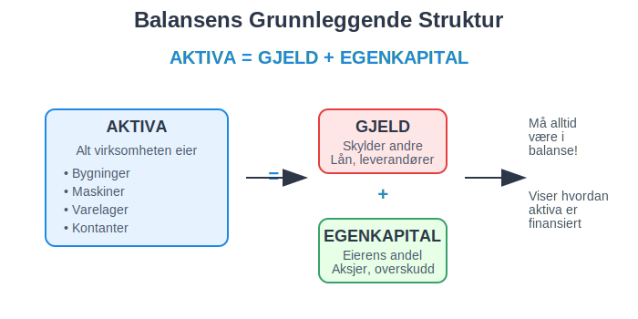
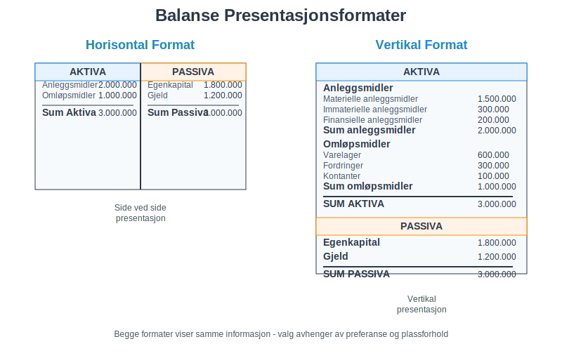
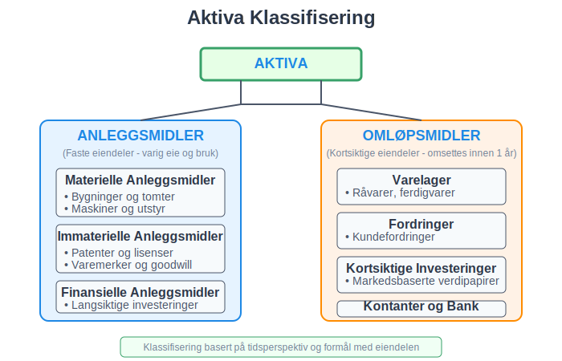
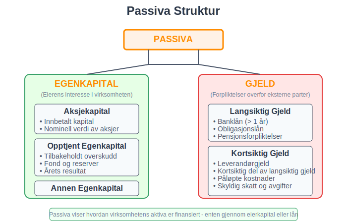
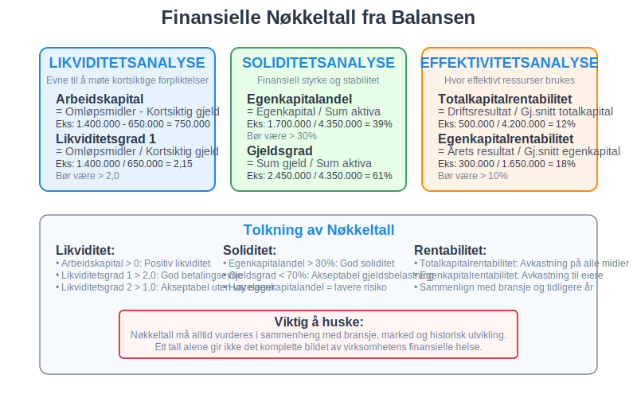
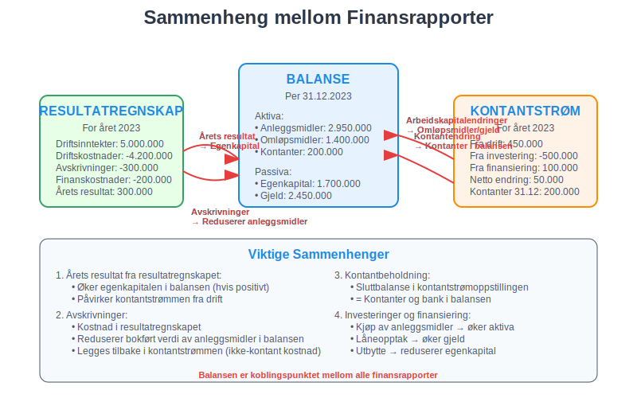
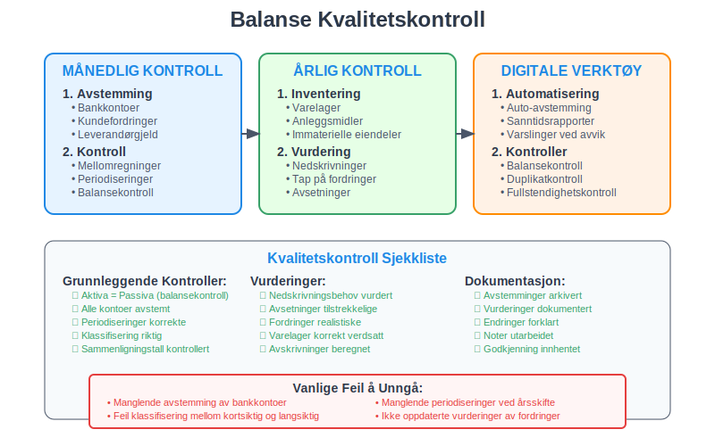

Balansen er et av de mest fundamentale og viktige finansielle dokumentene i regnskapsføring. Den gir et øyeblikksbilde av en virksomhets økonomiske stilling på et bestemt tidspunkt og viser forholdet mellom det virksomheten eier (eiendeler, også kalt aktiva) og hvordan dette er finansiert (passiva). Denne artikkelen gir en omfattende gjennomgang av balansens struktur, komponenter og praktiske anvendelse.
Seksjon 1: Balansens Grunnleggende Konsept
Balansen bygger på den fundamentale regnskapsligningen som må alltid være i perfekt balanse:
Aktiva = Gjeld + Egenkapital

Denne ligningen reflekterer et enkelt, men kraftfullt prinsipp: Alt en virksomhet eier (aktiva) må være finansiert enten gjennom lån (gjeld) eller eierens investeringer og tilbakeholdt overskudd (egenkapital).
1.1 Balansens Tidsperspektiv
I motsetning til resultatregnskapet som viser aktivitet over en periode, representerer balansen en øyeblikksbilde på et spesifikt tidspunkt. Dette gjør den til et statisk dokument som fanger virksomhetens finansielle posisjon på balansedagen.
1.2 Balansens Dobbelte Natur
Balansen kan presenteres på to måter:
- Horisontal format: Aktiva på venstre side, passiva på høyre side
- Vertikal format: Aktiva øverst, deretter gjeld og egenkapital

Seksjon 2: Aktiva - Virksomhetens Eiendeler
Aktiva representerer alle økonomiske ressurser som virksomheten kontrollerer og som forventes å gi fremtidige økonomiske fordeler. For en detaljert gjennomgang av aktiva, se vår artikkel Hva er aktiva?. For en bredere forståelse av eiendeler generelt, se Hva er eiendel?. For å forstå hvordan eiendeler verdsettes i formuessammenheng, se Hva er formuesverdi?.
2.1 Anleggsmidler (Faste Eiendeler)
Anleggsmidler er eiendeler som virksomheten har til varig eie og bruk:
- Materielle anleggsmidler: Bygninger, maskiner, inventar
- Immaterielle anleggsmidler: Patenter, varemerker, goodwill, forskning og utvikling
- Finansielle anleggsmidler: Langsiktige investeringer, aksjer
For mer informasjon om anleggsmidler, se Hva er anleggsmidler?.
2.2 Omløpsmidler (Kortsiktige Eiendeler)
Omløpsmidler er eiendeler som forventes omsatt til kontanter innen ett år:
- Varelager: Råvarer, varer under produksjon, ferdigvarer
- Fordringer: Kundefordringer, andre fordringer
- Kortsiktige investeringer: Markedsbaserte verdipapirer
- Kassebeholdning og bankinnskudd

Seksjon 3: Passiva - Finansieringskilder
Passiva viser hvordan virksomhetens aktiva er finansiert og består av gjeld og egenkapital.
3.1 Gjeld (Forpliktelser)
Gjeld representerer virksomhetens forpliktelser overfor eksterne parter:
Langsiktig Gjeld
- Banklån med løpetid over ett år
- Obligasjonslån
- Pensjonsforpliktelser - se også pensjonsrapportering
- Utsatt skatt
Kortsiktig Gjeld
- Leverandørgjeld
- Kortsiktig del av langsiktig gjeld
- Påløpte kostnader
- Skyldig skatt og avgifter
For en detaljert gjennomgang av gjeldsbegrepet, klassifisering og praktisk håndtering, se vår omfattende artikkel Hva er gjeld?.
3.2 Egenkapital
Egenkapital representerer eiernes interesse i virksomheten og utgjør deres nettoformue i selskapet:
- Aksjekapital: Innbetalt kapital fra aksjonærer. Les mer i Hva er aksjekapital?
- Opptjent egenkapital: Tilbakeholdt overskudd fra tidligere år
- Årets resultat: Netto resultat for inneværende år

Seksjon 4: Balansens Praktiske Oppbygging
4.1 Standardisert Balanseoppsett
Norske virksomheter følger en standardisert struktur for balansen som sikrer sammenlignbarhet:
| AKTIVA | Beløp | PASSIVA | Beløp |
|---|---|---|---|
| ANLEGGSMIDLER | EGENKAPITAL | ||
| Immaterielle eiendeler | 150.000 | Aksjekapital | 500.000 |
| Materielle anleggsmidler | 2.500.000 | Opptjent egenkapital | 1.200.000 |
| Finansielle anleggsmidler | 300.000 | Sum egenkapital | 1.700.000 |
| Sum anleggsmidler | 2.950.000 | ||
| GJELD | |||
| OMLØPSMIDLER | Langsiktig gjeld | 1.800.000 | |
| Varelager | 800.000 | Kortsiktig gjeld | 650.000 |
| Fordringer | 400.000 | Sum gjeld | 2.450.000 |
| Kontanter og bank | 200.000 | ||
| Sum omløpsmidler | 1.400.000 | ||
| SUM AKTIVA | 4.350.000 | SUM PASSIVA | 4.350.000 |
4.2 Balansekontroll og Avstemming
En korrekt balanse må alltid ha like store summer på aktiva- og passivasiden. Hvis balansen ikke stemmer, indikerer dette feil i regnskapsføringen som må identifiseres og korrigeres. Dette er hvor avstemming og avvikshåndtering blir kritisk viktig.
Seksjon 5: Balansens Rolle i Finansiell Analyse
Balansen er grunnlaget for beregning av mange viktige nøkkeltall som brukes til å analysere virksomhetens finansielle prestasjon og stabilitet. Et særlig viktig forhold er Q-ratio, som sammenligner markedsverdi med bokført verdi av eiendeler.
5.1 Likviditetsanalyse
Balansen gir grunnlag for å vurdere virksomhetens likviditet - evnen til å møte kortsiktige forpliktelser:
- Arbeidskapital = Omløpsmidler - Kortsiktig gjeld
- Likviditetsgrad 1 = Omløpsmidler / Kortsiktig gjeld
- Likviditetsgrad 2 = (Omløpsmidler - Varelager) / Kortsiktig gjeld
Disse nøkkeltallene er grunnleggende for å vurdere bedriftens betalingsevne og finansielle stabilitet. For dypere innsikt i arbeidskapital, se Hva er arbeidskapital?.
5.2 Soliditetsanalyse
Soliditet måler virksomhetens finansielle styrke og stabilitet:
- Egenkapitalandel = Egenkapital / Sum aktiva
- Gjeldsgrad = Sum gjeld / Sum aktiva
- Rentedekningsgrad = Driftsresultat / Rentekostnader

5.3 Effektivitetsanalyse
Balansen brukes også til å måle hvor effektivt virksomheten bruker sine ressurser:
- Totalkapitalrentabilitet = Driftsresultat / Gjennomsnittlig totalkapital
- Egenkapitalrentabilitet = Årets resultat / Gjennomsnittlig egenkapital
- Omløpshastighet aktiva = Omsetning / Gjennomsnittlig totalkapital
Seksjon 6: Balansens Sammenheng med Andre Finansrapporter
6.1 Kobling til Resultatregnskapet
Balansen og resultatregnskapet er tett forbundet:
- Årets resultat fra resultatregnskapet overføres til egenkapitalen i balansen
- Avskrivninger reduserer verdien av anleggsmidler i balansen. Les mer om avskrivning
- Periodiseringer påvirker både resultat og balanseposter
6.2 Kobling til Kontantstrømoppstillingen
Kontantstrømoppstillingen forklarer endringer i kontantbeholdningen mellom to balanser:
- Endringer i arbeidskapital påvirker kontantstrømmen fra drift
- Investeringer i anleggsmidler vises som kontantstrøm fra investeringsaktiviteter
- Låneopptak og nedbetaling påvirker kontantstrøm fra finansieringsaktiviteter

Seksjon 7: Spesielle Balanseposter og Vurderinger
7.1 Varelager
Varelager kan verdsettes etter ulike metoder:
- FIFO (First In, First Out)
- Gjennomsnittskost
- Laveste verdis prinsipp
7.2 Fordringer
Fordringer må vurderes for tap på krav:
- Individuelle vurderinger av store fordringer
- Gruppevise vurderinger basert på historisk tapserfaring
- Nedskrivning av fordringer som anses som tapte
7.3 Anleggsmidler og Avskrivninger
Anleggsmidler skal avskrives over forventet brukstid:
- Lineær avskrivning: Lik avskrivning hvert år
- Saldoavskrivning: Prosentvis avskrivning av gjenstående verdi
- Produksjonsavskrivning: Basert på faktisk bruk
For immaterielle eiendeler brukes amortisering. Les mer i Hva er amortisering?.
Seksjon 8: Balansens Juridiske og Regulatoriske Aspekter
8.1 Regnskapslovens Krav
Norsk regnskapslov stiller spesifikke krav til balansens innhold og presentasjon:
- Klassifisering av poster etter art og løpetid
- Sammenligningstall fra foregående år
- Noter som forklarer og utdyper balanseposter
8.2 Årsregnskapet og Balansen
Balansen er en integrert del av årsregnskapet sammen med:
- Resultatregnskap
- Kontantstrømoppstilling Noter
- Årsberetning
For mer om årsavslutning, se Hva er årsavslutning? og Hva er avslutningsbalanse?. For forståelse av hvordan balanseverdier overføres mellom perioder, se Hva er utgående balanse?.
Seksjon 9: Praktiske Tips for Balansehåndtering
9.1 Månedlig Balansekontroll
For å sikre korrekt balanse gjennom året:
- Månedlige avstemminger av alle hovedkontoer
- Kontroll av mellomregninger og periodiseringer
- Oppfølging av avvik og uforklarlige endringer
9.2 Årsavslutningsprosessen
Ved årsslutt kreves ekstra grundighet:
- Inventering av varelager og anleggsmidler
- Vurdering av fordringer og gjeld
- Beregning av periodiseringer og avsetninger
- Kontroll av at alle transaksjoner er korrekt klassifisert

9.3 Digitale Verktøy og Systemer
Moderne regnskapssystemer tilbyr:
- Automatisk balansering og kontroll
- Sanntidsrapportering av balansestatus
- Integrerte avstemmingsverktøy
- Automatiske periodiseringer
Seksjon 10: Balansens Betydning for Ulike Interessenter
10.1 For Ledelsen
Balansen gir ledelsen viktig informasjon om:
- Finansiell posisjon og stabilitet
- Kapitalstruktur og finansieringsbehov
- Likviditetssituasjon og betalingsevne
- Ressursallokering og investeringsmuligheter
10.2 For Investorer og Kreditorer
Eksterne interessenter bruker balansen til å vurdere:
- Kredittverdighet og risiko
- Avkastningspotensial på investeringer
- Finansiell styrke og bærekraft
- Sammenligning med andre virksomheter
10.3 For Skattemyndigheter
Skattemyndighetene bruker balansen til:
- Kontroll av skattemessige verdier
- Vurdering av skattepliktige gevinster og tap
- Oppfølging av skattemessige avskrivninger
- Verifikasjon av rapporterte tall
Konklusjon
Balansen er et fundamentalt verktøy i regnskapsføring som gir et komplett bilde av en virksomhets økonomiske stilling. Den fungerer som et øyeblikksbilde som viser hvordan virksomhetens ressurser er sammensatt og finansiert.
Forståelse av balansens struktur og komponenter er essensielt for:
- Økonomisk styring og beslutningstagning
- Finansiell analyse og risikovurdering
- Kommunikasjon med interessenter
- Overholdelse av juridiske krav
En korrekt og balansert balanse krever systematisk arbeid med saldobalanse, grundig avstemming og kontinuerlig kvalitetskontroll. Ved å mestre balansens prinsipper og praktiske anvendelse, legger man grunnlaget for solid økonomisk styring og pålitelig finansiell rapportering.
Balansen er ikke bare et regnskapsteknisk dokument, men et strategisk verktøy som reflekterer virksomhetens økonomiske helse og fremtidsmuligheter. Den forteller historien om hvordan virksomheten har bygget opp sine ressurser og hvordan den har valgt å finansiere sin vekst og utvikling.
Soliditet og Solvens
Mens balansen gir innsikt i bedriftens finansielle posisjon på et bestemt tidspunkt, fokuserer soliditet på bedriftens langsiktige finansielle robusthet ved å måle andelen egenkapital i totalkapitalen. Soliditet komplementerer balansen ved å gi en rask indikasjon på selskapets evne til å tåle tap og finansielle påkjenninger.